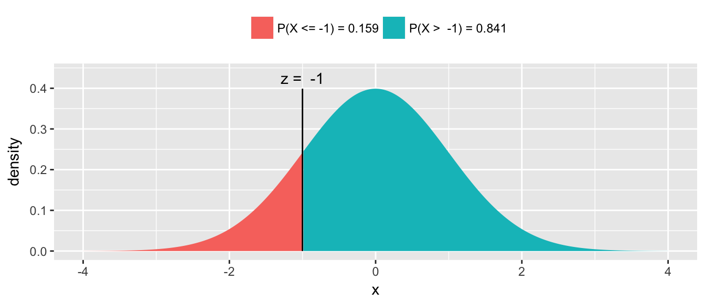
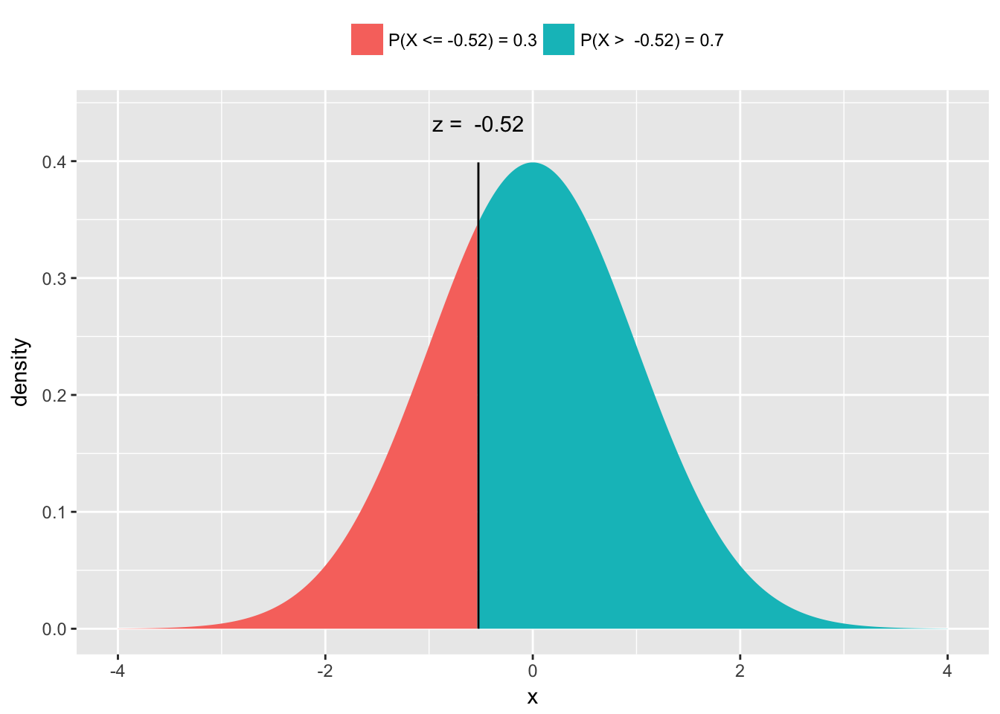
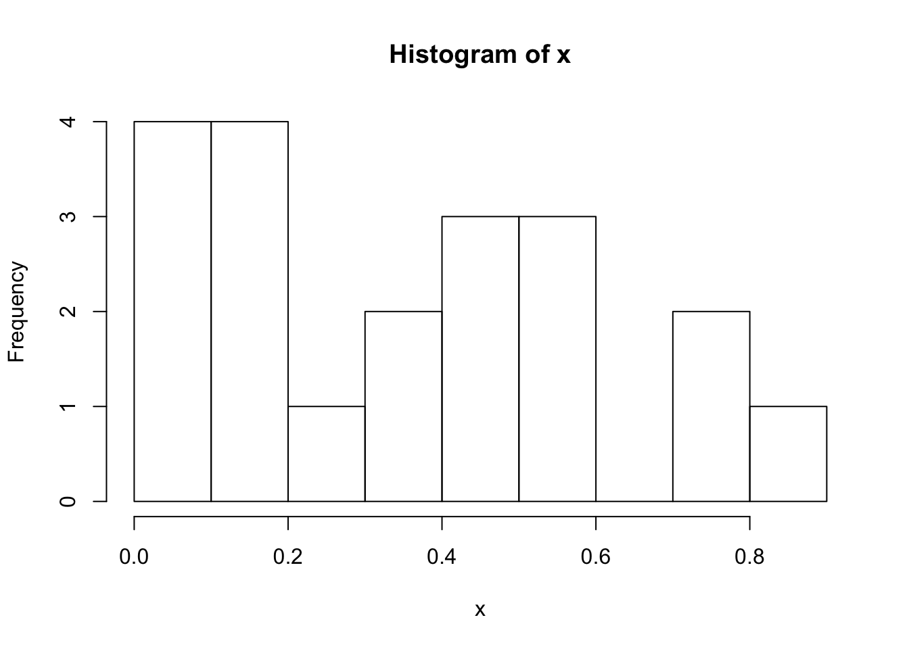

Chapter 3 Statistical Tables
Statistics makes use of a wide variety of distributions and before the days of personal computers, every statistician had books with hundreds and hundreds of pages of tables allowing them to look up particular values. Fortunately in the modern age, we don’t need those books and tables, but we do still need to access those values. To make life easier and consistent for R users, every distribution is accessed in the same manner.
3.1 mosaic::plotDist() function
The mosaic package provides a very useful routine for understanding a distribution. The plotDist() function takes the R name of the distribution along with whatever parameters are necessary for that function and show the distribution. For reference below is a list of common distributions and their R name and a list of necessary parameters.
| Distribution | Stem | Parameters | Parameter Interpretation |
|---|---|---|---|
Binomial |
|
|
Number of Trials Probability of Success (per Trial) |
Exponential |
|
|
Mean of the distribution |
Normal |
|
|
Center of the distribution Standard deviation |
Uniform |
|
|
Minimum of the distribution Maximum of the distribution |
For example, to see the normal distribution with mean \(\mu=10\) and standard deviation \(\sigma=2\), we use
library(mosaic)
plotDist('norm', mean=10, sd=2)
This function works for discrete distributions as well.
plotDist('binom', size=10, prob=.3)
3.2 Base R functions
All the probability distributions available in R are accessed in exactly the same way, using a d-function, p-function, q-function, and r-function. For the rest of this section suppose that \(X\) is a random variable from the distribution of interest and \(x\) is some possible value that \(X\) could take on. Notice that the p-function is the inverse of the q-function.
| Function | Result |
|---|---|
|
The height of the probability distribution/density at given \(x\) |
|
Find \(q\) such that \(P\left(X\le x\right) = q\) where \(x\) is given |
|
Find \(x\) such that \(P\left(X\le x\right) = q\) where \(q\) is given |
|
Generate \(n\) random observations from the distribution |
For each distribution in R, there will be this set of functions but we replace the “-function” with the distribution name or a shortened version. norm, exp, binom, t, f are the names for the normal, exponential, binomial, T and F distributions. Furthermore, most distributions have additional parameters that define the distribution and will also be passed as arguments to these functions, although, if a reasonable default value for the parameter exists, there will be a default.
3.2.1 d-function
The purpose of the d-function is to calculate the height of a probability mass function or a density function (The “d” actually stands for density). Notice that for discrete distributions, this is the probability of observing that particular value, while for continuous distributions, the height doesn’t have a nice physical interpretation.
We start with an example of the Binomial distribution. For \(X\sim Binomial\left(n=10,\pi=.2\right)\) suppose we wanted to know \(P(X=0)\)? We know the probability mass function is \[P\left(X=x\right)={n \choose x}\pi^{x}\left(1-\pi\right)^{n-x}\] thus \[P\left(X=0\right) = {10 \choose 0}\,0.2^{0}\left(0.8\right)^{10} = 1\cdot1\cdot0.8^{10} \approx 0.107\] but that calculation is fairly tedious. To get R to do the same calculation, we just need the height of the probability mass function at \(0\). To do this calculation, we need to know the x value we are interested in along with the distribution parameters \(n\) and \(\pi\).
The first thing we should do is check the help file for the binomial distribution functions to see what parameters are needed and what they are named.
?dbinomThe help file shows us the parameters \(n\) and \(\pi\) are called size and prob respectively. So to calculate the probability that \(X=0\) we would use the following command:
dbinom(0, size=10, prob=.2)## [1] 0.10737423.2.2 p-function
Often we are interested in the probability of observing some value or anything less (In probability theory, we call this the cumulative density function or CDF). P-values will be calculated this way, so we want a nice easy way to do this.
To start our example with the binomial distribution, again let \(X\sim Binomial\left(n=10,\pi=0.2\right)\). Suppose I want to know what the probability of observing a 0, 1, or 2? That is, what is \(P\left(X\le2\right)\)? I could just find the probability of each and add them up.
dbinom(0, size=10, prob=.2) + # P(X==0) +
dbinom(1, size=10, prob=.2) + # P(X==1) +
dbinom(2, size=10, prob=.2) # P(X==2)## [1] 0.6777995but this would get tedious for binomial distributions with a large number of trials. The shortcut is to use the pbinom() function.
pbinom(2, size=10, prob=.2)## [1] 0.6777995For discrete distributions, you must be careful because R will give you the probability of less than or equal to 2. If you wanted less than two, you should use dbinom(1,10,.2).
The normal distribution works similarly. Suppose for \(Z\sim N\left(0,1\right)\) and we wanted to know \(P\left(Z\le-1\right)\)? 
The answer is easily found via pnorm().
pnorm(-1)## [1] 0.1586553Notice for continuous random variables, the probability \(P\left(Z=-1\right)=0\) so we can ignore the issue of “less than” vs “less than or equal to”.
Often times we will want to know the probability of greater than some value. That is, we might want to find \(P\left(Z \ge -1\right)\). For the normal distribution, there are a number of tricks we could use. Notably \[P\left(Z\ge-1\right) = P\left(Z\le1\right)=1-P\left(Z<-1\right)\] but sometimes I’m lazy and would like to tell R to give me the area to the right instead of area to the left (which is the default). This can be done by setting the argument \(lower.tail=FALSE\).
The mosaic package includes an augmented version of the pnorm() function called xpnorm() that calculates the same number but includes some extra information and produces a pretty graph to help us understand what we just calculated and do the tedious “1 minus” calculation to find the upper area. Fortunately this x-variant exists for the Normal, Chi-squared, F, Gamma continuous distributions and the discrete Poisson, Geometric, and Binomial distributions.
library(mosaic)
xpnorm(-1)## ## If X ~ N(0, 1), then## P(X <= -1) = P(Z <= -1) = 0.1587## P(X > -1) = P(Z > -1) = 0.8413## 
## [1] 0.15865533.2.3 q-function
In class, we will also find ourselves asking for the quantiles of a distribution. Percentiles are by definition 1/100, 2/100, etc but if I am interested in something that isn’t and even division of 100, we get fancy can call them quantiles. This is a small semantic quibble, but we ought to be precise. That being said, I won’t correct somebody if they call these percentiles. For example, I might want to find the 0.30 quantile, which is the value such that 30% of the distribution is less than it, and 70% is greater. Mathematically, I wish to find the value \(z\) such that \(P(Z<z)=0.30\).
To find this value in the tables in a book, we use the table in reverse. R gives us a handy way to do this with the qnorm() function and the mosaic package provides a nice visualization using the augmented xqnorm(). Below, I specify that I’m using a function in the mosaic package by specifying it via PackageName::FunctionName() but that isn’t strictly necessary but can improve readability of your code.
mosaic::xqnorm(0.30) # Give me the value along with a pretty picture## ## If X ~ N(0, 1), then## P(X <= -0.5244005) = 0.3## P(X > -0.5244005) = 0.7## 
## [1] -0.5244005qnorm(.30) # No pretty picture, just the value## [1] -0.52440053.2.4 r-function
Finally, I often want to be able to generate random data from a particular distribution. R does this with the r-function. The first argument to this function the number of random variables to draw and any remaining arguments are the parameters of the distribution.
rnorm(5, mean=20, sd=2)## [1] 20.53183 18.78752 15.21955 19.25521 17.99265rbinom(4, size=10, prob=.8)## [1] 8 9 8 63.3 Exercises
We will examine how to use the probability mass functions (a.k.a. d-functions) and cumulative probability function (a.k.a. p-function) for the Poisson distribution.
Create a graph of the distribution of a Poisson random variable with rate parameter \(\lambda=2\) using the mosaic function
plotDist().Calculate the probability that a Poisson random variable (with rate parameter \(\lambda=2\) ) is exactly equal to 3 using the
dpois()function. Be sure that this value matches the graphed distribution in part (a).For a Poisson random variable with rate parameter \(\lambda=2\), calculate the probability it is less than or equal to 3, by summing the four values returned by the Poisson
d-function.Perform the same calculation as the previous question but using the cumulative probability function
ppois().
We will examine how to use the cumulative probability functions (a.k.a. p-functions) for the normal and exponential distributions.
Use the mosaic function
plotDist()to produce a graph of the standard normal distribution (that is a normal distribution with mean \(\mu=0\) and standard deviation \(\sigma=1\).For a standard normal, use the
pnorm()function or itsmosaicaugmented versionxpnorm()to calculate- \(P\left(Z<-1\right)\)
- \(P\left(Z\ge1.5\right)\)
Use the mosaic function
plotDist()to produce a graph of an exponential distribution with rate parameter 2.Suppose that \(Y\sim Exp\left(2\right)\), as above, use the
pexp()function to calculate \(P\left(Y \le 1 \right)\). (Unfortunately there isn’t a mosaic augmentedxpexp()function.)
We next examine how to use the quantile functions for the normal and exponential distributions using R’s q-functions.
Find the value of a standard normal distribution (\(\mu=0\), \(\sigma=1\)) such that 5% of the distribution is to the left of the value using the
qnorm()function or the mosaic augmented versionxqnorm().Find the value of an exponential distribution with rate 2 such that 60% of the distribution is less than it using the
qexp()function.
- Finally we will look at generating random deviates from a distribution.
Generate a single value from a uniform distribution with minimum 0, and maximum 1 using the
runif()function. Repeat this step several times and confirm you are getting different values each time.Generate a sample of size 20 from the same uniform distribution and save it as the vector
xusing the following:x <- runif(20, min=0, max=1)Then produce a histogram of the sample using the function
hist()hist(x)
Generate a sample of 2000 from a normal distribution with
mean=10and standard deviationsd=2using thernorm()function. Create a histogram the the resulting sample.